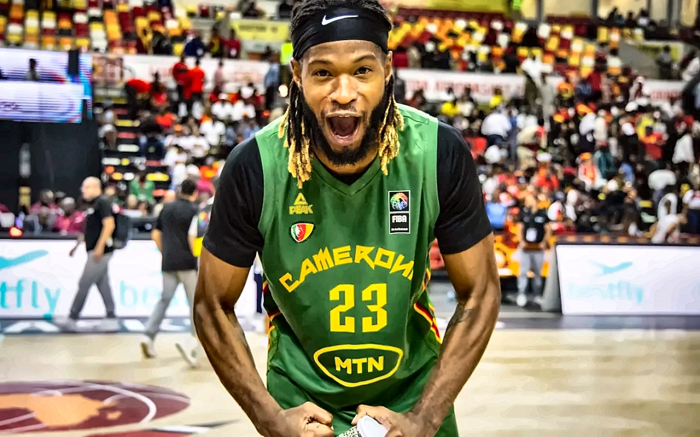

Lions Indomptables · AfroBasket 2025 (Luanda) — 4ᵉ place
© FECABASKET / FIBA Africa
Équipe A Messieurs · Lions Indomptables
Sénior · Élite mondiale59ᵉClassement FIBA mondial
Top 5Afrique
4ᵉAfroBasket 2025 (Angola)
🏀 Dernière compétition · AfroBasket 2025 (Luanda)
- Quart de finale : Cameroun écrase l'Égypte 95-68 · Fabien Ateba 26 pts (5/9 à 3 pts), 5 rebonds, 3 passes
- Demi-finale : Cameroun perd contre l'Angola 73-74 · lancer franc gagnant de Gakou à 0,7 sec de la fin
- Petite finale (bronze) : Sénégal s'impose 98-72 face au Cameroun · Jean Jacques Boissy 40 pts (record AfroBasket)
- Bilan : 4ᵉ place finale · première demi-finale depuis 2009 (16 ans !)
🗓️ Prochaine fenêtre · Qualifications FIBA World Cup 2027
2-5
JUILLET 2026
🇨🇲 Fenêtre 3 · Cameroun hôte (Groupe A)
Le Cameroun accueille la 3ᵉ fenêtre des qualifs Coupe du Monde 2027. Confirmé par FIBA Africa le 15 avril 2026 (tirage d'Abidjan). Les 3 adversaires du Groupe A :
🇨🇻 Cap-Vert
🇱🇾 Libye
🇸🇸 Soudan du Sud
📊 Calendrier des qualifications WC 2027 · Groupe A
- Fenêtre 1 (Nov. 2025) — déjà disputée · hôte 🇱🇾 Libye
- Fenêtre 2 (Fév. 2026) — déjà disputée · hôte 🇨🇻 Cap-Vert
- Fenêtre 3 (2-5 juillet 2026) — hôte 🇨🇲 CAMEROUN
- Fenêtre 4 (27-30 août 2026) — hôte 🇸🇸 Soudan du Sud (à confirmer)
Format FIBA : à chaque fenêtre, les 4 équipes du Groupe A se retrouvent dans le pays hôte (2 matchs par équipe sur 4 jours).
🇨🇲 Sélection officielle Fenêtre 3 · Qualifs Qatar 2027
🏆 Staff technique
| Rôle | Nom | Profil |
|---|---|---|
| Head Coach | Alfred Aboya | Sélectionneur principal · ancien UCLA (USA) · cadre du basket camerounais |
| Asst. Coach | Mikel Ereno | Assistant tactique · expertise EuroLeague / FIBA Europe |
| Asst. Coach | Auguste Siedjou | Assistant · expertise scouting et développement |
👥 Effectif Fenêtre 3 · 16 Lions Indomptables (Yaoundé · 2-5 juillet 2026)
| # | Joueur | Poste | Club / Statut · Stats clés |
|---|---|---|---|
| ⭐ | Ulrich Chomche | Pivot | 🇨🇲→🇺🇸 Toronto Raptors (NBA) · 1ᵉʳ joueur drafté directement de la NBA Academy Africa (2024) |
| ⭐ | Landry Nnoko | Pivot | Ex-NBA (Miami Heat, LA Clippers) · ancien Clemson NCAA · vétéran cadre · pivot d'expérience FIBA |
| ⭐ | Jeremiah Hill | Meneur | Capitaine · 12 pts / 5,5 reb / 7,7 pd sur les qualifs précédentes · leader vestiaire |
| ⭐ | Fabien Ateba | Ailier | 26 pts vs Égypte à l'AfroBasket 2025 (5/9 à 3 pts, 5 reb, 3 pd) · shooteur d'élite |
| ⭐ | Paul Eboua | Ailier-fort | 🇮🇹 Italie · LBA Serie A · athlétisme et envergure FIBA confirmés |
| ⭐ | Russel Tchewa | Pivot | 🇺🇸 NCAA D1 (USF South Florida) → Europe pro · taille + impact défensif premium |
| — | Samir Gbetkom | Ailier | Pro Europe · ailier polyvalent |
| — | Tamenang Choh | Ailier-fort | Pro Europe · ex-Brown University (NCAA) |
| — | Brice Eyaga | Ailier-fort | 🇨🇲 FAP Yaoundé · BAL Defensive Team |
| — | Roger Moute | Ailier | Pro · vétéran cadre · leadership défensif |
| — | Jordan Bayehe | Meneur | Pro · meneur secondaire |
| — | Valentin Lele | Pivot | 🇨🇲 FAP Yaoundé · pivot intérieur |
| — | Aristide Mouaha | Ailier | Pro · première sélection majeure |
| — | Ekoume Jacques | Ailier | Pro · scoreur |
| — | Gaston Abega | Meneur/Arrière | Pro · meneur de raid |
| — | James Fondong | Ailier-fort | Pro · intérieur mobile |